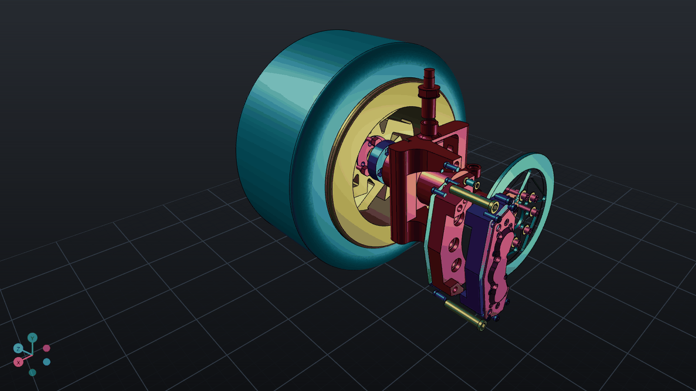
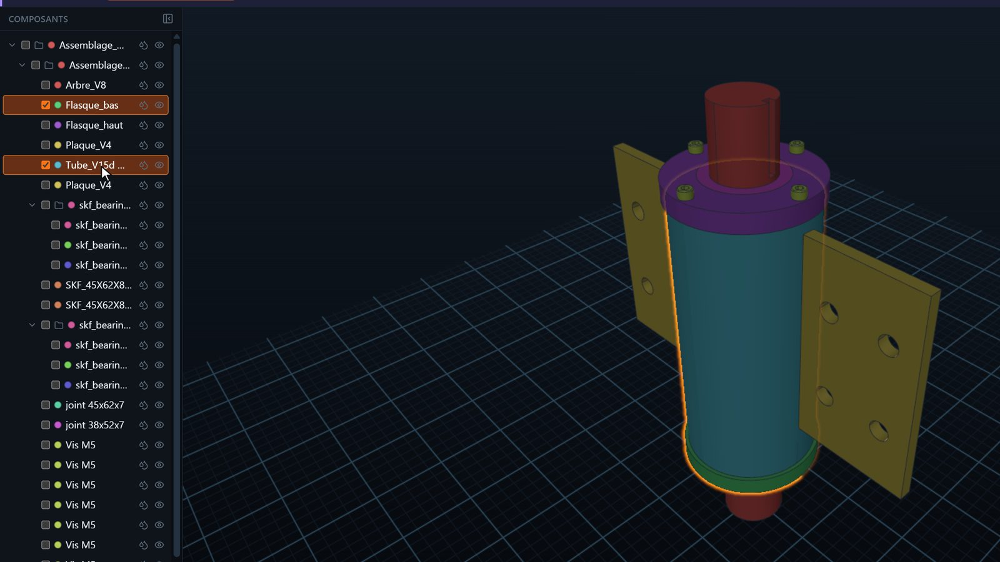
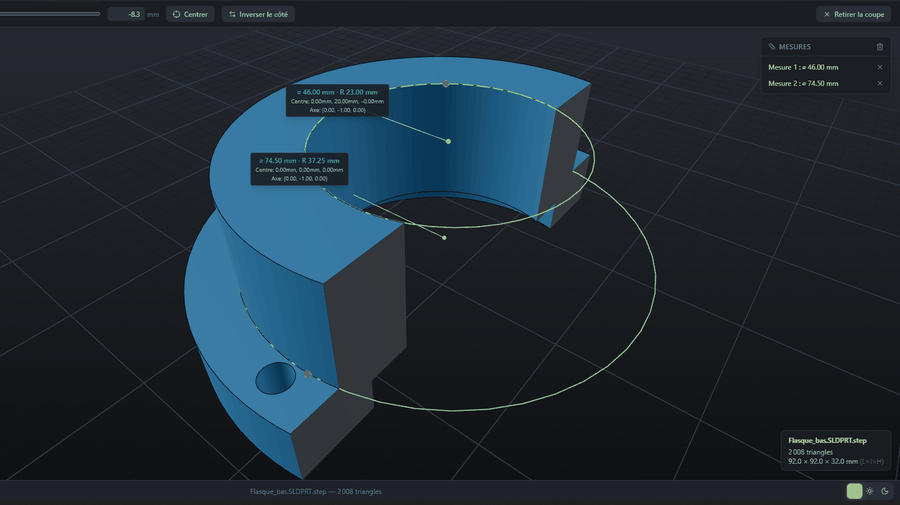

6 display modes
Shaded with edges, shaded, wireframe, hidden lines visible or removed, realistic rendering: read each part the way you like (keys 1 to 6).
Open your STEP, IGES, BREP, STL, OBJ, 3DXML or DXF files, measure, cut, explode, detect collisions and present your projects, right on your PC, with no internet connection.
14 days with every feature, then view-only until a license is activated · One-time payment · Windows 10/11


See your model from every angle, as in CAD software.

Shaded with edges, shaded, wireframe, hidden lines visible or removed, realistic rendering: read each part the way you like (keys 1 to 6).
Front, back, left, right, top, bottom and isometric in one click, with the current view highlighted in the toolbar.
Select, pan, rotate, zoom, zoom window and zoom to fit to reframe the whole model at once (Z key).
Select every part in an area with a single gesture.
Cut along X, Y or Z, with the slider or at a position typed in mm: the section is filled and hatched to see inside your parts, and you can measure wall thicknesses directly in the section view.
Find each part: select it, hide it, change its color or opacity, rename it with a double-click.
Go back to the starting view, or undo all your changes to start again from the model as it was opened.
Show the 3D view alone to present your model cleanly.
Take dimensions and comment on the model without leaving the screen.

Hover over an edge or a face: length, diameter and radius, area. Pin several measurements, measure between two features (minimum distance, center distance, parallel faces, angles) or point to point with snapping.
Click an edge to show its length, two edges for their distance, a hole edge for its diameter.
Overall size, diameters, center distances, thicknesses, volume and surface area generated in one click.
Place text markers on the model; they are saved with your project.
Adjust the look to read, compare and present better.
Show or hide the grid placed under the part (G key).
Make the whole assembly transparent to see through the parts, or set the opacity part by part.
Choose a color and paint the parts directly.
One color per part (identical parts share the same one); on a single part, one color per face to read its shape better.
Remove the colors applied by hand in one click.
Draw new random colors until you like the result.
Adjust the lighting (intensity, direction, tint, ambient lights) and the camera position.
Classic, day or night mode, to suit your workstation and your lighting.
Understand how your parts fit together and move.
Radial, axial (X, Y, Z), by subassembly or step-by-step explosion, with a slider and guide lines.
Animated exploded view, step-by-step assembly (and disassembly), 360° rotation and presentation mode, with adjustable duration, speed, loop and easing.
Record the animation as an MP4 (H.264) or WebM video: 16:9 (1920×1080) or vertical 9:16 for Instagram and TikTok, 30 or 60 frames/s, with a preview frame, gradient background and small logo.
Precise interference analysis: shaft in bore measured to the micron (diametral clearance or interference), exact intersection volume for the other parts, insufficient clearances, contacts and threads classified separately. Background computation, zoom on each zone, PDF and CSV report. You can also move a part: it stops right at the first contact.
Group parts under a name: the group is selected and moved as a single block.
Continuous rotation, rotation by angle, translation (one way or ping-pong) and turntable presentation, to show how a mechanism works.
Animate and drive your model.
Illustrate fluid flow through your assembly: click a bore and the circuit is created along its axis on its own. Six fluids (water, air, oil, gas, steam, hot / cold), several circuits, Inlet / Outlet markers, free labels, automatic legend and MP4 video export. A schematic illustration, not a numerical simulation.
Drive the view with simple sentences ("explode to 50%", "hide the screws", "make the tube red", "section on X"). Runs on your PC, with no account or connection.
Open your files as they are and produce documents ready to share.
STEP, IGES, BREP, STL, OBJ, 3DXML and DXF, by drag and drop, with the Open button or, with the installed version, by double-clicking in Windows Explorer. Native files (SLDPRT, CATPart, IPT…) open if SOLIDWORKS is installed and open on the same computer; otherwise, export them as STEP.
Choose Standard, Fine or Very precise; a model already opened reopens almost instantly thanks to the cache.
Save the view, measurements, annotations, colors and section in a self-contained file that includes the source file.
A PDF with logo, four 3D views, a dimension table, measurements and annotations, in English or French.
High-resolution image of the current view, with an optional transparent background.
Choose your printer (or a custom build plate), scale, lay flat and split into segments: the build plate preview shows in green what fits and in red what exceeds. STL, 3MF or OBJ export in millimeters, with optional interlocking joints (sockets and pins).
Native formats (SLDPRT, SLDASM, CATPart, IPT, etc.) open if SOLIDWORKS is installed and open on the same computer: it converts them to STEP for PindiCADViewer. Otherwise, export them as STEP from the original software.
€49 — shown in your local currency at checkout
€49 including all taxes — VAT not applicable, article 293 B of the French General Tax Code.
After payment, your license is sent to you automatically by email (check your spam folder).
Try free for 14 daysInstaller and portable version
14 days with every feature, then view-only until a license is activated.
User guide (PDF) — the whole software explained step by step.
After payment, your license is sent to you automatically by email, usually within a few minutes (check your spam folder). The email contains your key and the .pcvlic file; the installer can be downloaded from this page. If you have not heard from us within 24 hours, write to contact@pindiconcept.fr.
Two Windows versions: the standard installer, and a portable version that needs no installation (to keep on a USB drive, for example).
Yes. On first launch, "Start the 14-day free trial" gives access to every feature, with no credit card. After that, the software stays usable in view-only mode (open and view your models) until a license is activated.
Yes. The interface, the user guide, the PDF data sheets and the Assistant are available in English and French. The language follows Windows on first launch and can be changed at any time (View › Language, or the FR | EN selector on the start screen).
No, Windows only for now.
No. Your CAD files are opened and processed only on your computer. The software contains no telemetry and does not check for updates automatically. The AI assistant also runs on your PC, with no connection, and the license is checked offline, with no hardware ID. The only exception: once the license is activated, the software checks at most once a day that it has not been deactivated (after a refund or a payment dispute), sending only the license number and the version; without a connection, it works normally.
On first launch, click "I have a license" (or, later, the Help › License… menu) and paste your license key, or choose the .pcvlic file received with "Import a license file". With the installed version, double-clicking the .pcvlic file is enough. Activation works without internet and unlocks everything immediately.
The license is personal: you can install it on up to 2 computers that you own. It covers all 1.x versions of the software.
Yes, if SOLIDWORKS is installed and open on the same computer: PindiCADViewer has it convert the native file (SOLIDWORKS, CATIA V5, Inventor, Parasolid, Creo, NX, Solid Edge…) to STEP, then displays it. Without SOLIDWORKS, export the file as STEP from the original software; STEP, IGES, BREP, STL, OBJ, 3DXML and DXF files open with no other software.
As the software is delivered immediately by download, the statutory right of withdrawal does not apply when you have expressly requested immediate delivery and waived this right at checkout (article L221-28, 13° of the French Consumer Code). As a goodwill gesture, we refund you on simple request within 14 days of purchase if a technical problem prevents you from using the software and we cannot solve it. Details: terms and conditions of sale (article 6).
Yes: the user guide (PDF) describes step by step the installation, activation, opening files, navigation, measurements, the section plane, assemblies, 3D printing and exports. The same guide opens in the software with the F1 key.
See the user guide (PDF): it is also built into the software (F1 key, or Help › User guide menu). For any other question, write to us at contact@pindiconcept.fr.